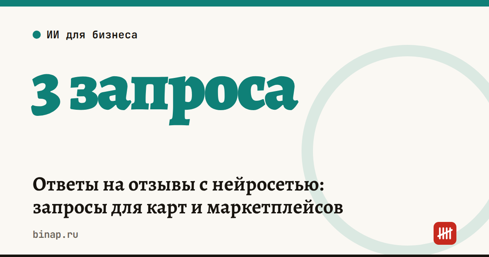

Ответы на отзывы с нейросетью: запросы для карт и маркетплейсов

Нейросеть хорошо пишет черновик ответа на отзыв за минуту: благодарит, извиняется по сути и предлагает решение. Но факты по заказу, условия возврата и обещания подставляете и проверяете вы — иначе нейросеть их придумает. Ниже — запросы для разных типов отзывов и короткий чек-лист проверки.
Коротко
- Отвечайте на все отзывы — и на плохие, и на хорошие: ответ видят следующие покупатели.
- Нейросеть пишет черновик, человек проверяет факты, сроки и обещания.
- Не вставляйте в запрос имя, телефон и адрес покупателя — это персональные данные по закону № 152-ФЗ.
- По данным опроса «Билайн бизнес», 38% компаний уже используют ИИ-агентов для общения с клиентами, в малом бизнесе — 45% (опрос одной компании, 400 участников).
Сроки, изменения и разборы для ИП и самозанятых — каждое утро в Telegram и MAX. Подпишитесь, чтобы не пропустить.
Запрос 1. Негативный отзыв
Ты — администратор компании [название, сфера]. Ответь на отзыв клиента вежливо и коротко, на «вы», до 500 знаков. Поблагодари за отзыв, извинись по сути проблемы без оправданий и без юридических формулировок о вине. Предложи решение: [что вы готовы сделать — замена, возврат, скидка на следующий заказ, звонок менеджера]. Не обещай ничего сверх этого списка. Дай контакт для связи: [телефон или мессенджер компании]. Факты по заказу: [что произошло на самом деле]. Отзыв: [текст без имени и телефона]
Запрос 2. Нейтральный отзыв или отзыв с вопросом
Ты — администратор компании [название]. Клиент оставил отзыв с замечанием или вопросом: [текст]. Ответь до 400 знаков: поблагодари, ответь на вопрос по фактам [факты], скажи, что учтём замечание, если оно справедливое. Не используй шаблонные фразы вроде «ваше мнение очень важно для нас».
Запрос 3. Хороший отзыв
Ты — владелец [тип бизнеса] «[название]». Клиент оставил отзыв: [текст]. Напиши ответ до 300 знаков: поблагодари, упомяни деталь из отзыва, пригласи снова. Предложи [повод: новинка, услуга, акция] — только если он действительно есть. Тон тёплый, без восклицательных знаков в каждом предложении.
Что проверить перед публикацией
| Проверка | Почему |
|---|---|
| Факты по заказу совпадают с вашими данными | нейросеть может «додумать» обстоятельства |
| Обещания есть в ваших условиях | возврат, скидка, срок — только реальные |
| Нет персональных данных клиента | 152-ФЗ и правила площадок |
| Нет признания нарушений закона | такие формулировки лучше согласовать с юристом |
| Тон — как у вашей компании | ответ пишет компания, а не робот |
Как встроить в работу
- Сохраните три запроса в заметки или в шаблоны мессенджера.
- Раз в день — или сразу при уведомлении — отвечайте на новые отзывы.
- Раз в неделю выписывайте повторяющиеся жалобы: это список того, что нужно исправить в работе, а не в ответах.
- Если отзывов много, часть ответов можно поручить ИИ-агенту — но с проверкой человеком для негативных.
Почему скорость ответа клиенту решает больше, чем цена, — в колонке клиентов теряют на первом ответе. Ещё задачи, которые можно отдать нейросети, — в статье ИИ для малого бизнеса: 10 задач.
Частые вопросы
Можно ли публиковать ответ нейросети без правки? Не стоит. Проверьте факты, обещания и тон — и уберите шаблонные фразы.
Отвечать ли на явно несправедливый отзыв? Да, спокойно и по фактам: ответ читают не автор отзыва, а будущие покупатели. Если отзыв нарушает правила площадки, параллельно подайте жалобу через её интерфейс.
Какую нейросеть использовать? Подойдёт любая, которой вы уже пользуетесь. Важнее не сервис, а хороший запрос с фактами и ограничениями.